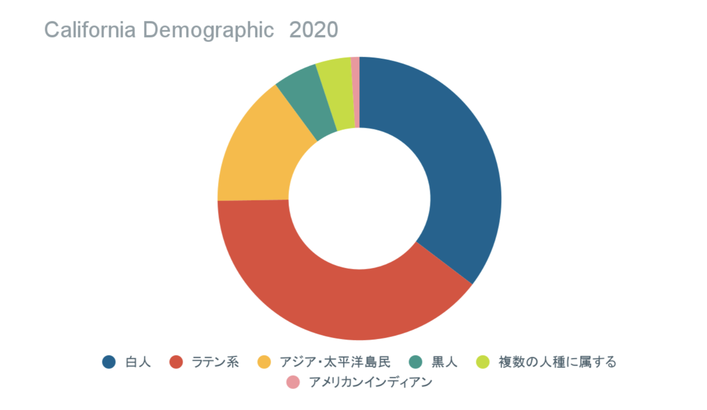

ちなみに南カリフォルニアはラテンアメリカやアジアからの移民の目的地となっています。
California's Population - Public Policy Institute of California (ppic.org)
※「2つかそれ以上に属する」とは自分が2つかそれ以上の人種に属すると考える人のことです。
英語ですが、多様な人がいるのでアクセントつきです
沿岸都市部では民主党が有力な一方で、セントラルバレーや南カリフォルニアでは共和党が強い傾向にあります。
近年では電子工学で有名なシリコンバレーやハリウッドなどアメリカを代表とする産業地域があります。また、5つの国立公園もあり、世界でも有名な観光地です。農業の面では灌漑システムが整備されてからブドウ、オレンジ、レモン、モモ等の生産量が上がり、全米で高いシェアを誇っています。このように幅広い分野で中心的な役割を担っていることがわかります。
年中日差しが強いのでサングラスは必要です！また、一年を通じて暖かいので、冬でも歩くと若干汗をかきます。基本気候に生活が左右されることはないです。夏はめちゃくちゃ暑い！午前中はたまに霧がすごい事があります。5メートル先も見えないかも、、というくらいです。
近くにトランポリンパークや映画館があります。モールもあるのですが、車が無いとアクセスが厳しいです。
公共交通機関としてはバスが走っています。
また、リフトやウーバーが多く使用されています。割と安全で、信頼度も高いです。スクーターとスケボーで移動する人も多く見かけます。
治安はあまりよくないです。現地の人に、「近くのモールで発砲事件があったのであまり行かないほうがいいよ」と言われたエピソードがあります。日中でも一人は危ないとアメリカ育ちの人に心配されます。様子のおかしいおじさんに話しかけられたり、押し売りされたりした話も聞きます。単独行動は極力控えましょう。
リフトを使いました。
水道水は基本飲まないです。フィルターを使いましょう。 付近に大きなアジアンマーケットがあります。品ぞろいが良いので優秀です。 外食する場所はとても充実しています。外食は大体10ドル前後で、高くて税抜き15ドルくらいです。キャンパス内の食事も充実しているので食事に困ることは少ないと思います。チップはきりがいいところや10％にしています
サングラス
California State University, Fresno・カリフォルニア州立大学フレズノ校
Home - California State University, Fresno (fresnostate.edu)
図書館は大きく、スタバもあります。勉強している人が多いので良い環境ですね。theater design/technologyの分野が強いです。
新品のipadを卒業までレンタルできます。審査はあるものの、ポケットWIFIの貸し出しもされています。
授業は1~100(入門、introductory), 100~200 (advance)というように分けられています。開講されている期間がリミットされている場合があるので履修登録は気を付けましょう。特に春から入る人はアカデミック・アドバイザーと一緒に組むとよいです。
留学関係のオフィスに聞くと何でも答えてくれます。逆に聞かないと教えてもらえないです。日本人のコミュニティーがあるのでそこで情報収集するとよいです。
学校のホームページでチェックしよう！種類は少なくないです。ブルドッグインターナショナルという留学生限定のクラブがあります。学校主催のイベントはやはり秋学期が多い印象です。
オンキャンパスの寮はキッチンがなく、トイレは大勢と共同が一般的です。また、ミールプランが義務になっています。値段は20万/学期と高額です。
オフキャンパスのhousingは学校のHousing のオフィスの人に教えてもらいました。最初からオフキャンパスの場所を探すのは難しいですが、学校に聞くと候補を教えてもらえると思います。候補で出してもらったアパートはもともとシャトルが出てるはずだが新型コロナウイルスの状況で現在は走っていません。ちなみに学校まで徒歩20分前後です。